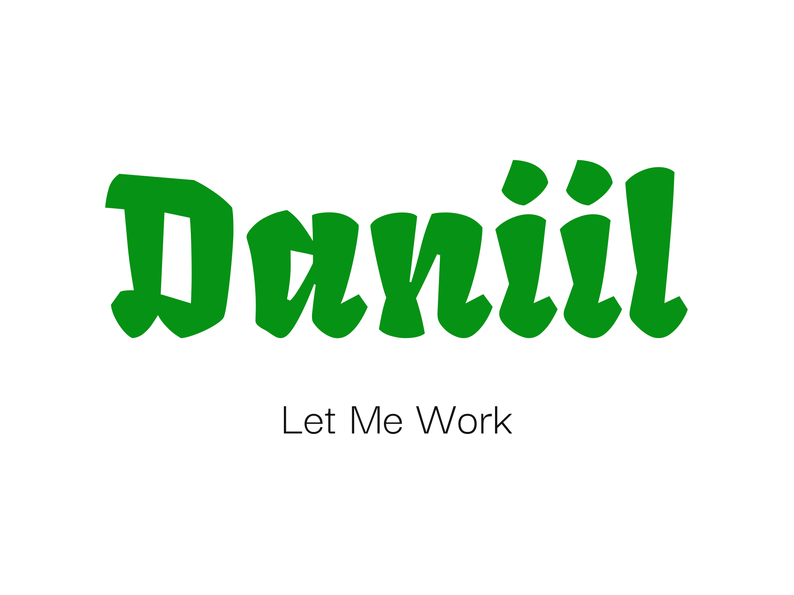
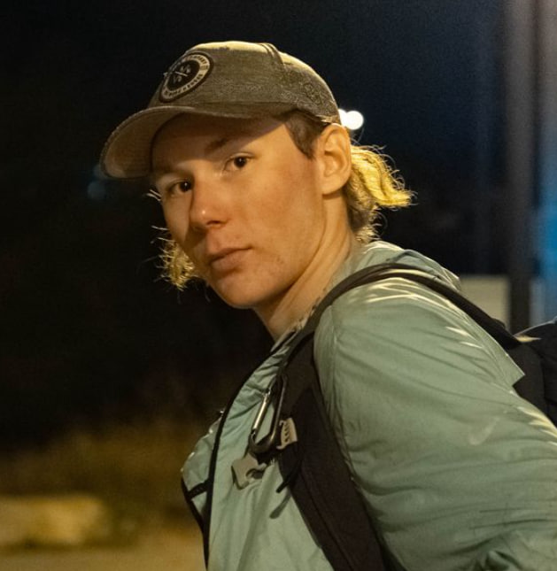

Daniil Kotelevets
Ayudante de cocina | Camarero | Barman

Joven entusiasta, responsable y trabajador, con experiencia en el sector de la hostelería.
Destaco por mi rapidez de aprendizaje, capacidad para adaptarme a diferentes funciones y ofrecer
un servicio al cliente de alta calidad.
Experiencia Laboral
Cadena de Cafeterías "Kur Krilo" (Junio 2023 - Agosto 2023)
- Preparación y montaje de platos según recetas establecidas.
- Atención al cliente, toma de pedidos y servicio en mesa.
- Elaboración de bebidas y cócteles básicos.
- Mantenimiento del orden y limpieza en la zona de trabajo.
Habilidades
- Atención al cliente y comunicación efectiva
- Trabajo en equipo y bajo presión
- Rapidez en la toma de decisiones
- Capacidad de aprendizaje y adaptación rápida
- Responsabilidad, puntualidad y organización
Idiomas
- 🇷🇺 Ruso (Nativo)
- 🇪🇸 Español (C2 - Dominio Avanzado)
- 🇬🇧 Inglés (C1 - Avanzado)
Disponibilidad y Condiciones
- Residencia legal en España con permiso de trabajo.
- Disponibilidad inmediata.
- Remuneración deseada: 10-12€/hora.